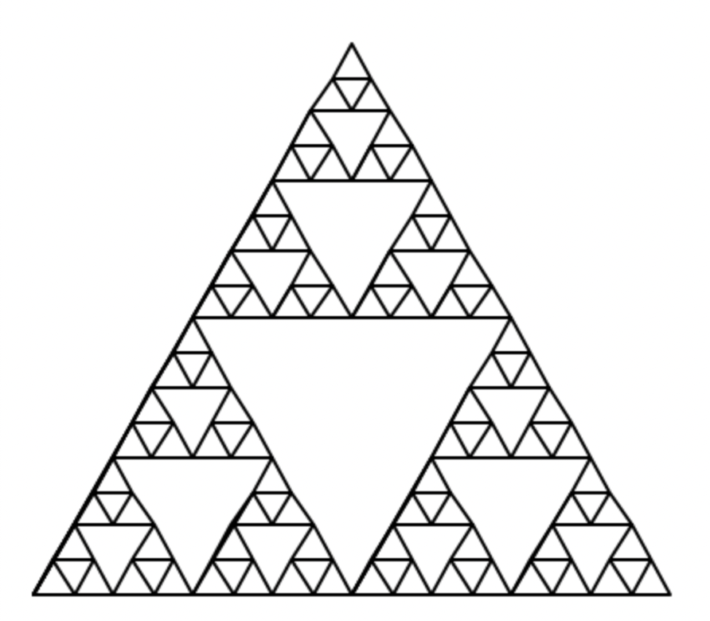
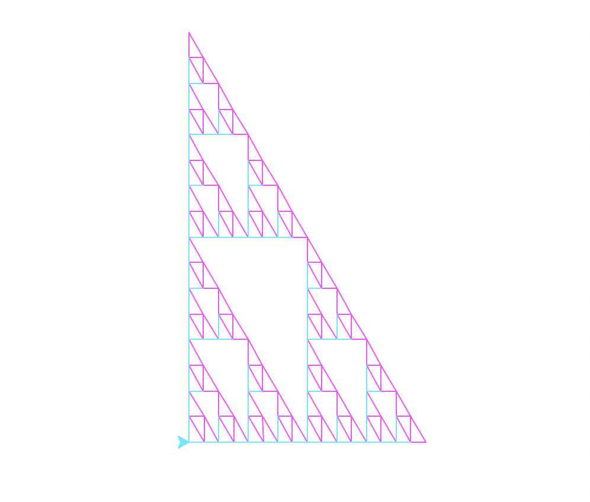
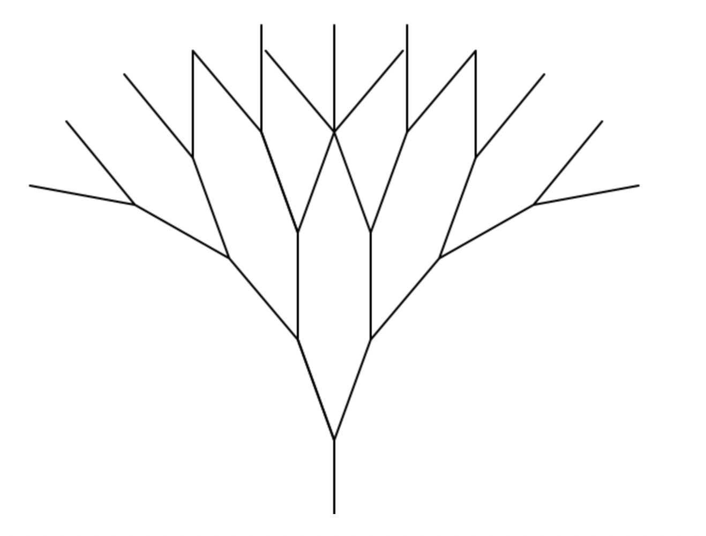
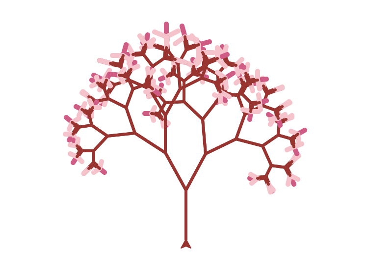

Funcy Fractals Funcs
Koch Curve
| Basic |
Modified |
koch_curve (t,4,20) |
koch_curve(t,6,10) |
| Just an average koch. |
In this koch curve, the color of each line is randomly chosen, the size decreases as the depth decreases, and the turtle turns right 90 degrees after each recursion. |
 |

|
def koch_curve(t, depth, size):
if (depth == 1):
t.color(random.randrange(255), random.randrange(255), random.randrange(255))
t.fd(size)
else:
koch_curve(t, depth-1, size - 1)
t.lt(60)
koch_curve(t, depth-1, size - 1)
t.rt(120)
koch_curve(t, depth-1, size - 1)
t.lt(60)
koch_curve(t, depth-1, size - 1)
t.rt(90)
Sierpinski Triangle
| Basic |
Modified |
sierpinski(t,5,200) |
sierpinski(t,5,200) |
| Just an average equilateral triangle sierpinski. |
This sierpinski triangle has been modified such that the triangle is not equilateral but instead a right triangle. It changes color when drawing the base case. |
|  |

|
def righttri(t, size):
t.lt(90)
t.fd(size*(3**.5))
t.rt(150)
t.fd(size*2)
t.right(120)
t.fd(size)
t.rt(180)
def sierpinski(t, depth, size, scale_factor=1):
if depth == 1:
t.color(255,70,250)
righttri(t, size)
t.color(70,230,255)
else:
sierpinski(t, depth-1, size/2)
t.fd(size/2)
sierpinski(t, depth-1, size/2)
t.bk(size/2)
t.lt(90)
t.fd((size*(3**.5))/2)
t.rt(90)
sierpinski(t, depth-1, size/2)
t.rt(90)
t.fd((size * (3**.5)/2))
t.lt(90)
Tree
| Basic |
Modified |
tree(t,4,50,20) |
tree(t,6,50,20) |
| Just an average tree. |
This tree has cherry blossoms drawn with random angles on the ends, decreases by a random interval from 0 to 3 with each recursion and decreases finitely by 6 each time the depth decreases. The angle is also increased by a random angle in a range of 0 to 10. It is also colored to look more realistic. |
|  |

|
def tree(t, depth, size, angle):
t.width(3)
if depth == 0:
angel = (random.randrange(130))
t.width(5)
t.fd(size)
t.color(223, 82,134)
t.fd(size)
t.bk(size)
t.rt(angel)
t.color(255, 192, 203)
t.fd(size)
t.bk(size)
t.lt(angel*2)
t.fd(size)
t.bk(size)
t.rt(angel)
t.color("brown")
t.width(3)
t.bk(size)
else:
angle += (random.randrange(10))
size-=(random.randrange(3))
t.color("brown")
t.fd(size)
t.rt(angle)
tree(t, depth-1, size - 6, angle)
t.lt(2 * angle)
tree(t, depth-1, size - 6, angle)
t.rt(angle)
t.bk(size)